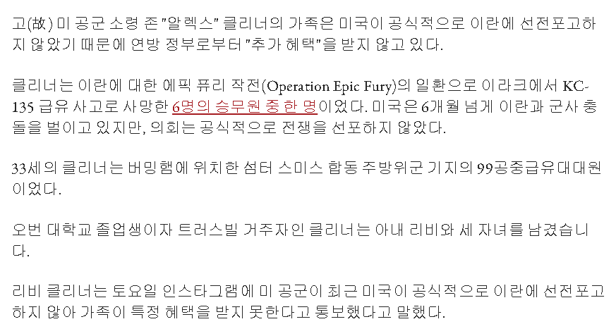

https://1819news.com/news/item/wife-of-trussville-airman-killed-in-iraq-says-family-isnt-getting-additional-benefits-due-to-semantics-over-war-declaration
이란을 공격한 에픽 퓨리 작전은 선전 포고를 거친 정식 전쟁이 아니라
어디까지나 특수 군사 작전 취급이다.
그래서 유가족들에게 전쟁 중 사망 수당이 지급되지 않는다고 함.
Thank you for your service
but not in my neighborhood